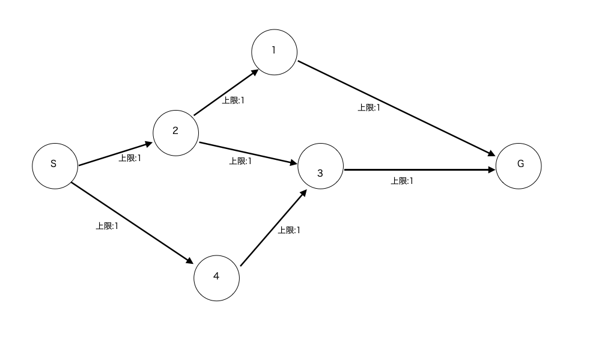
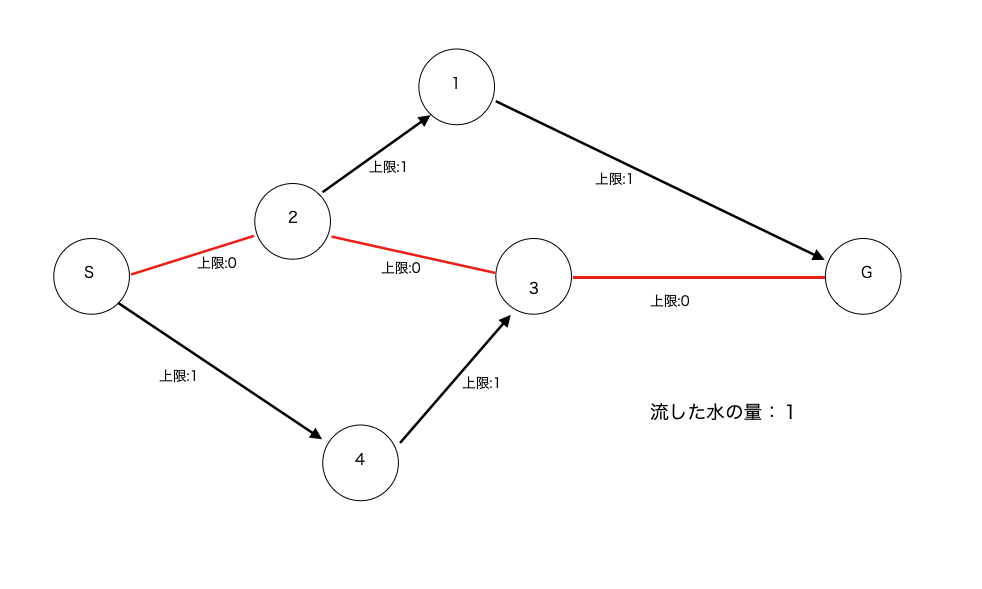
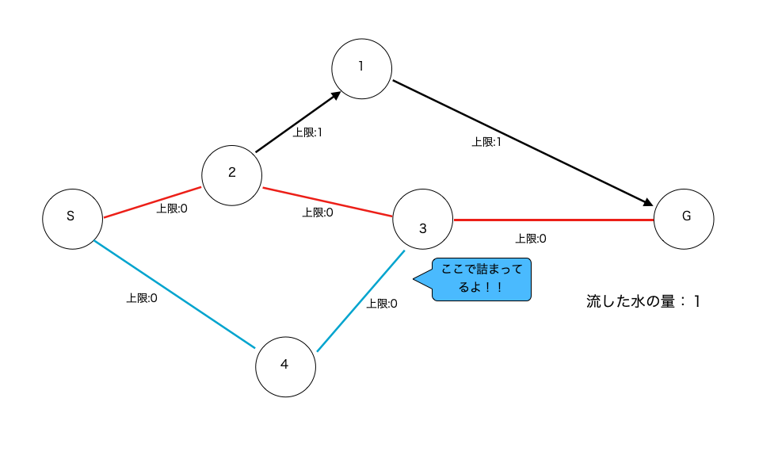
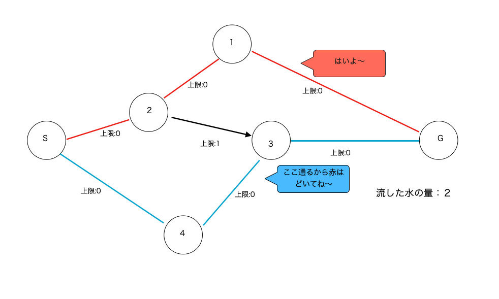
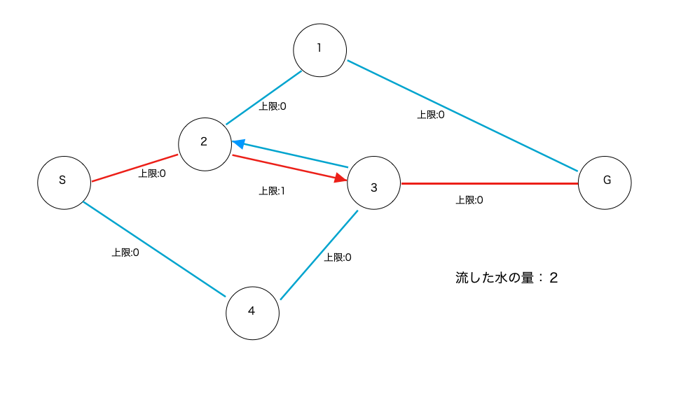
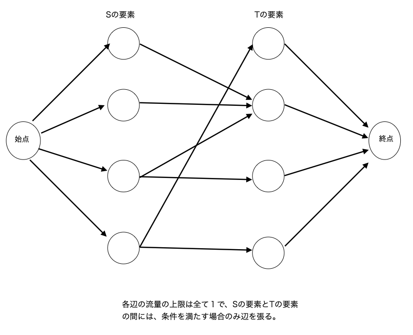

前のページ
フォード-ファルカーソン法は、最大流問題と言われる問題を解くためのアルゴリズムです。
最大流とは、グラフの各辺を通る水流の量の上限が決められているときに、始点から終点までどれだけ同時に水を流せるかという問題です。
例えば以下のグラフは、各辺の最大流量が 1 の場合の、単純な問題です。
図１

ここで、SからGにとりあえず適当に道を選んで水を 1 だけ流してみます。
すると、水の流れは以下の図の赤い線になります。
図２

現在、終点:Gに達している水流の量は 1 ですが、もう一回水を流して水の量を 2 にしたいです。
しかし、下の図のようにもう一度青い線の流し方で水を流しても頂点 3 で詰まってしまいます(頂点 3 と G を繋ぐ辺はこれ以上を水を流せないから)。
図３

こうなったとき本来理想的なのは、以下のようにあらかじめ赤の水流が頂点 1 を通って G に流れることです。
図４

しかし、青の線は気付きました。
青 「こうやって通れば実質赤が上の道を使うのと同じじゃん！」
図５

頂点 2 と頂点 3 の間に注目してください。
赤が頂点 2 から頂点 3 に水を流して、青が頂点 3 から頂点 2 に水を流したら、結局何も流さないのと同じです。
今回の説明では便宜上赤と青で色分けして説明しましたが、本来、流す水に区別はないので、{S -> 2 -> 1 -> G} と {S -> 4 -> 3 -> G} の二つのルートに水を流すことになります。
{S -> 2 -> 1 -> G} と {S -> 4 -> 3 -> G} の辺を見ると、図４、図５で上限が 0 になっている辺(使った辺)と対応しているのがわかると思います。
つまり、図４と図５の動作は実質同じです。
まとめると、
手順1 :水を一回ずつ流していく。しかし、図３のようにどこかで詰まってしまうことがある。
手順2 :図４のように、赤の水流をひとつ前に押し戻して、改めて赤が別のルートを見つけることができればそれでOK.
手順3 :しかし、実装上水流を前に押し戻すのは難しいので、図５の様に、赤が来た道を赤の代わりに青が戻り、引き続き青が探索をするということができる。実際は水流を色で区別したりしないので、これは実質赤が来た道を戻るのと同じである。
これを実装するために、各辺に逆辺というものを持たせておきます。例えば、赤の水流が辺:(2->3)を通ったとき、(2->3)の上限を0にすると同時に、後から３に来た水流が赤の代わりに 2 に戻れるように、辺:(3->2)の上限を 1 にしておく。
この様なアルゴリズムをフォード-ファルカーソン法といいます。
また、最大流のテクニックは上記のような単純なフローの問題の他にもさまざまな問題に使うことができます。
今回のverifyはそのことも兼ねて二部マッチングの問題を解いてみます。
二部マッチングとは、二つの集合 S と T があったとき、「ある条件」を満たすような x,y (x,yは異なる集合の要素)を最大で何組選べるかという問題です。
この問題は、「ある条件」を満たす様な x,y の間に最大流量が 1 の辺を張ることで、最大流問題に帰着できます。
具体的には下の図の様に辺を張ります。

このように辺を張ったグラフの、始点から終点までの最大流が二部マッチングの答えです。
verifyはこちらの問題で、以下はコード例です。
- #include<iostream>
- #include<vector>
- #include<string>
- using namespace std;
- int flow[300][300];
- bool dfs(int src , int snk , vector<int>& used){
- if(src == snk)return true;
- bool res = false;
- used[src] = 1;
- for(int v = 0 ; v < 300 ; v++){
- if(used[v] == 0){
- if(flow[src][v] >= 1){
- flow[src][v]--;
- flow[v][src]++;//逆辺
- if(dfs(v,snk,used)){
- return true;
- }else{
- flow[src][v]++;
- flow[v][src]--;
- }
- }
- }
- }
- return false;
- }
- int main(){
- int n ; cin >> n;
- vector<int> a(n) ,b(n) , c(n), d(n);
- for(int i = 0 ; i < n ; i++){
- cin >> a[i] >> b[i];
- }
- for(int i = 0 ; i < n ; i++){
- cin >> c[i] >> d[i];
- }
- for(int i = 1; i < n+1 ; i++){
- for(int j = 1 ; j < n+1 ; j++){
- if(a[i-1] < c[j-1] && b[i-1] < d[j-1]){
- flow[i][n+j]=1;
- }
- }
- }
-
- for(int i = 1 ; i < n + 1 ; i++){
- flow[0][i] = 1;
- }
- for(int j = n+1;j < n+1+n ; j++){
- flow[j][n*2+15] = 1;
- }
-
- int ans = 0;
- vector<int>used(300,0);
- while (dfs(0,n*2+15 , used)){
- ans++;
- for(int &x:used)x = 0;
- }
- cout << ans << endl;
-
- return 0;
- }